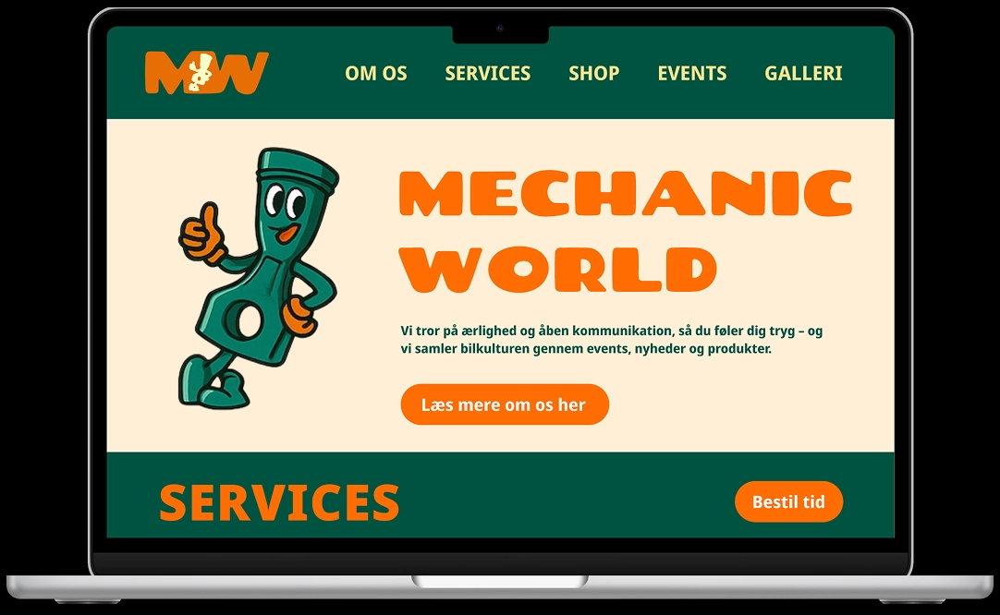
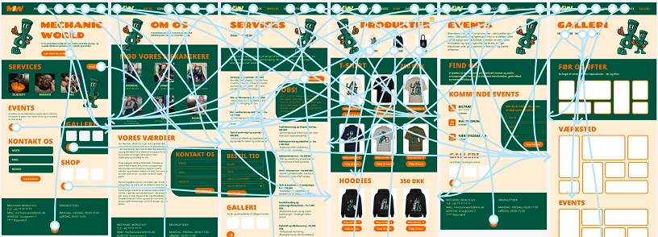
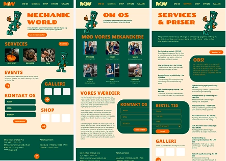

GRUNDLÆGGENDE UX/UI
LØSNING
LØSNING
Løsningen blev et moderne mekaniker-website med fokus på både bilservice og bilfællesskab. Sitet kombinerer klassiske mekaniker-ydelser som service, reparation og booking med elementer som events, galleri og webshop, hvor brugerne kan købe merchandise og engagere sig i fællesskabet omkring biler.
LÆS MEREDESIGN
Designet er lavet, så det både føles professionelt og imødekommende. Farver, illustrationer og typografi er valgt for at give sitet personlighed, samtidig med at det er overskueligt og nemt at navigere. Brugeren kan hurtigt finde information om services, kommende events eller produkter, uden at det føles tungt eller uoverskueligt.
MÅLET
Målet med løsningen var at skabe en digital platform, der ikke kun fungerer som et klassisk værkstedssite, men også som et samlingspunkt for bilinteresserede.
VIS MINDREPROCES
PROCES
Processen startede med valg af emne, formål og målgruppe. Her arbejdede jeg med brainstorm, desk research og afklaring af, hvem siden henvender sig til, og hvilke behov brugerne har. På baggrund af dette lavede jeg user stories for at sikre, at designet tog udgangspunkt i reelle brugerbehov frem for antagelser.
LÆS MEREIDEUDVIKLING
Herefter arbejdede jeg med idéudvikling gennem skitser, crazy eights og wireframes, først i low-fidelity for at fokusere på struktur og hierarki. Jeg lavede både mobil- og desktop-wireframes med en mobile-first tilgang.
Efterfølgende udviklede jeg moodboard og styletile, hvor farver, typografi og visuel stil blev fastlagt. Designet blev herefter omsat til en klikbar HiFi-prototype i Figma.
TEST
Undervejs testede jeg løsningen ved hjælp af 5-second test, tænke-højt test og Likert-skala, hvilket gav input til justeringer af layout, navigation og indhold. Processen var iterativ, og designet blev løbende justeret på baggrund af feedback og tests.
VIS MINDRELÆRING
LÆRING
I dette tema har jeg fået en grundlæggende forståelse for UX-processen fra idé til færdig digital løsning. Jeg har lært, hvor vigtigt det er at basere designbeslutninger på research og brugerindsigter frem for mavefornemmelser.
LÆS MEREMETODER
Jeg har arbejdet praktisk med UX-metoder som user stories, moodboards, wireframes, prototyper og brugertests og har fået erfaring med at dokumentere og formidle min proces. Derudover har jeg styrket min forståelse for informationsarkitektur, visuel hierarki og samspillet mellem indhold, design og brugeroplevelse.
UX VS DESIGN
Temaet har givet mig en større sikkerhed i at arbejde struktureret og iterativt med design, og jeg har lært at se UX som en central del af udviklingen af digitale løsninger – ikke kun som noget visuelt, men som noget der skal fungere for rigtige brugere.
VIS MINDRE